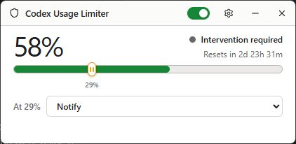
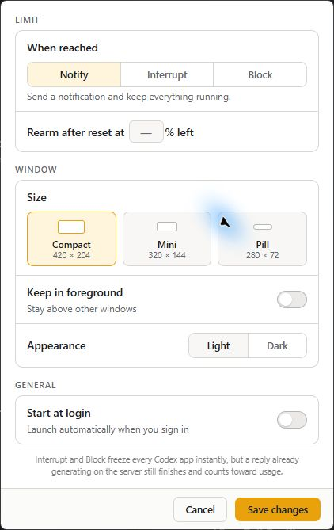

Notify
Show a native notification and leave Codex running.
Codex desktop utility
See what remains. Get notified, block new turns, or interrupt owned work when quota gets low.

Compact, Mini, and Pill views keep the remaining quota and reset time visible without taking over the desktop.

Choose the window size, keep it in the foreground if useful, and start it at sign-in. Settings stay local.
The limiter watches both Codex rate-limit windows and acts on the one closer to running out.
Show a native notification and leave Codex running.
Interrupt owned active turns and suspend matching local Codex engines for the episode.
Close inference admission and keep matching local Codex engines suspended until reset verification.
Connect a workspace, drag the floor, pick a response, and leave the switch armed.
The app starts a local Codex app-server session to read usage and verify the account.
Drag the marker to the percentage of remaining quota where the selected response should run.
The limiter persists its state and verifies the account before reopening inference.
Enforcement covers Codex sessions launched through the app. Optional external suspension covers matching local, current-user desktop and CLI engines.
It cannot reach Codex in WSL, containers, remote machines, or the web. A server-side reply already generating may still finish and count toward usage.
Windows 10 or 11. Codex CLI must already be installed and signed in.